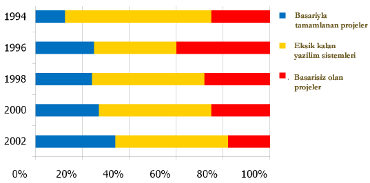
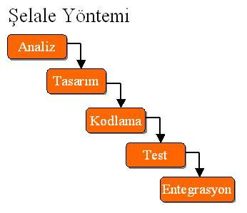
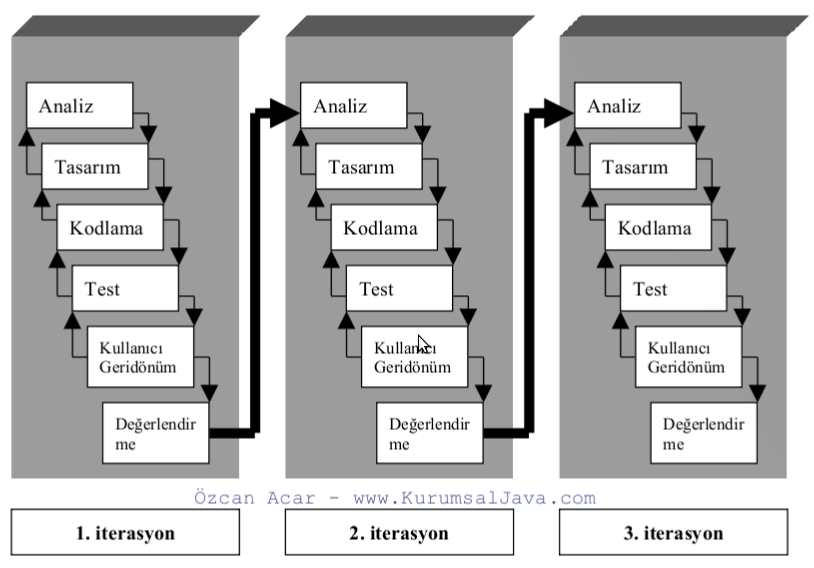

Ana Sayfa >
07.Kasım.2010 >
Çevik Süreçler ve Proje Yönetimi
Dikkat : Yapım aşamasındadır.
Çevik Süreçler ve Proje Yönetimi
İçindekiler
- Çevik Süreçlere Giriş
- Manifesto ve Prensipler
- Şelale Modeli ve Çevik Süreçlerin Farkı
Neden proje yönetimi? Çünkü başararısızlar...

TDK : Kolaylık ve çabuklukla davranan, kıvrak, hareketli kimse.
Google : ilk arama sonucunda ortaya çıkan resim.
Topluluk : www.agilealliance.org
Manifesto
- Kişiler ve iletişim süreç ve araçlardan önce gelir.
- Çalışır durumda olan program detaylı dökümantasyondan daha önceliklidir.
- Müşteri ile beraber çalışmak söleşmelerden ve anlaşmalardan daha önceliklidir.
- Değişikliklere ayak uydurmak bir planı takip etmekten daha önemlidir.
Presipler
- En önemli öncelik erken ve sürekli olarak kullanılabilir programlar
oluşturarak, müşteriyi tatmin etmektir.
- Yazılımın ilerleyen dönemleride gelse bile talep edilen değişiklikler
hoş karşılanmalıdır. Çevik süreçler, değişiklikleri
müşterinin rekabetteki avantajını korumak ve sağlamak için kullanırlar.
- Kısa sürelerde çalışır programlar ortaya koy. Seçim, zaman diliminin
kısa tutulması yönünde olmalıdır.
- Müşteri ve programcılar proje süresince beraber çalışırlar.
- Projelerin motivasyonu yüksek bireyler tarafından yapılmasını sağla,
onlara ihtiyaç duydukları ortamı ve desteği ver ve işi bitirebileceklerine inan.
- Bilgi alışverişinde en verimli ve efektif yöntem takm içinde yüz yüze konuşmaktır.
- Çalışır durumda olan program ilerlemenin ana göstergesidir.
- Çevik süreçler etkili yazılım yöntemlerini destekler. Müşteri,
programcılar ve kulanıcılar sabit bir tempoda beraber çalışabilmelidir.
- Devamlı teknik mükemmelliğe özen gösterilmesi ve iyi
tasarım çevikliği kuvvetlendirir.
- Sadelik esastır.
- En iyi mimariler, gereksinimler ve tasarımlar kendi kendine
organize olabilien takımlardan çıkar.
- Belirli zaman dilimlerinde takım daha nasıl efektrik olabileceği
konusunda kendi kendini sorgular ve edindiği bilgiler doğrultusunda
çalışma tarzını adapte eder.
Şelale yöntemi aşağıdaki iş akışını izler.

Şelale Sürecinin Özellikleri
- Kademelidir. Bir kademedeki işlemler bitmeden diğer kademeye geçilmez.
- Bürokrasi ve dökümantasyon vardır.
- Müşteri ile programcılar sadece analiz aşamasında bir arada olurlar.
Çecik Süreçler aşağıdaki iş akışını izler.

Çevik Süreçleri Özellikleri
- Müşteri gereksinimleri ile program eşanlı geliştirilir.
- Yapılan küçük değişikliler testten sonra sürekli imlemente yapılarak programa eklenir.
- Bürokrasi yoktur. Detaylı döküman oluşturulmaz.
- İterasyon vardır.
- Kod kalitesi yüksek olur. Pair Programmming
- Programcılar aktif olarak projede yer alırlar.
- Günde 8 saat çalışılır. Gerekirse mesai yapılır.
- Müşteriye kısa aralıklar ile sürümler sunulur.
- Programcılar ile müşteriler arasında iletişim tamdır.
- Çevik süreçler gerilla süreçlerdir. Hızlı reaksiyon gösterilmelidir.
Hazırlayan
Onur Özgür ÖZKAN